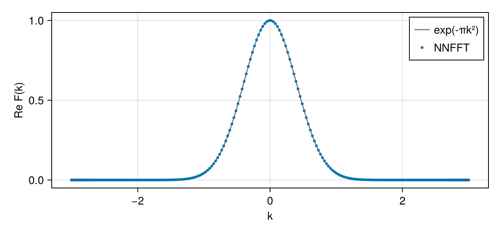

Non-equidistant in Both Domains
This guide shows how to compute the NNFFT (type 3 in the terminology of FINUFFT), which has arbitrary real points in both domains: values $f_l$ at $M$ sources $\bm{y}_l \in \mathbb{R}^D$ are transformed to $J$ targets $\bm{k}_j \in \mathbb{R}^D$,
\[\hat{f}_j = \sum_{l=1}^{M} f_l \, \mathrm{e}^{-2\pi\mathrm{i}\,\bm{k}_j\cdot\bm{y}_l}, \qquad f_l = \sum_{j=1}^{J} \hat{f}_j \, \mathrm{e}^{2\pi\mathrm{i}\,\bm{k}_j\cdot\bm{y}_l} \quad \text{(adjoint)}.\]
Neither the sources nor the targets need to lie in a fixed interval. plan_nnfft(k, y) takes the targets k ($D \times J$) and the sources y ($D \times M$) and the options listed in the API. The cost grows with the extent of the two point sets, not with their number (see How NFFT.jl Works): wide spreads in both domains make the transform expensive.
Fourier transform of a function sampled at random points
A Gaussian $f(y) = \mathrm{e}^{-\pi y^2}$ has the Fourier transform $\hat{f}(k) = \int_{-\infty}^{\infty} f(y) \mathrm{e}^{-2\pi\mathrm{i}ky} \,\mathrm{d}y = \mathrm{e}^{-\pi k^2}$. With samples at random points and trapezoidal weights, the integral becomes an NNFFT, evaluated here at Chebyshev points in $[-3, 3]$:
using NFFT, LinearAlgebra, Random, CairoMakie
Random.seed!(1)
y = sort(12 .* rand(4000) .- 6) # sources in [-6, 6]
w = [y[2] - y[1]; (y[3:end] .- y[1:end-2]) ./ 2; y[end] - y[end-1]]
k = 3 .* cospi.((2 .* (1:300) .- 1) ./ 600) # targets in [-3, 3]
p = plan_nnfft(reshape(k, 1, :), reshape(y, 1, :); reltol=1e-10)
F = p * complex.(w .* exp.(-π .* y .^ 2))
maximum(abs, F .- exp.(-π .* k .^ 2))0.00011047429389550023The remaining difference is the error of the trapezoidal rule on the random points, not that of the NNFFT. Against the direct sum:
pd = NNDFTPlan(reshape(k, 1, :), reshape(y, 1, :))
norm(F - pd * complex.(w .* exp.(-π .* y .^ 2))) / norm(F), accuracy(p)(2.1252466301425646e-12, 9.809040167511179e-11)fig = Figure(size=(640, 300))
ax = Axis(fig[1, 1]; xlabel="k", ylabel="Re F(k)")
lines!(ax, -3:0.01:3, k -> exp(-π * k^2); color=:gray, label="exp(-πk²)")
scatter!(ax, k, real.(F); markersize=5, label="NNFFT")
axislegend(ax)
fig
Several dimensions
Sources and targets in 2D, off-centre on purpose, against the direct sum:
ys = 40 .* rand(2, 5000) .+ [100.0, -20.0]
ks = 2 .* rand(2, 3000) .- [0.3, 1.5]
f = randn(ComplexF64, 5000)
p2 = plan_nnfft(ks, ys; reltol=1e-8)
norm(p2 * f - NNDFTPlan(ks, ys) * f) / norm(p2 * f), accuracy(p2)(2.1199118198691953e-9, 8.9788430791458e-9)The plan reports the size of the inner NFFT and the window of the spreading:
p2NNFFTPlan{Float64} from 5000 sources to 3000 targets: inner NFFT of size (140, 140), spreading with ExpSemicircle W = 11, σ = 1.55, predicted error 8.9788430791458e-9The adjoint is the transform from the targets back to the sources:
v = randn(ComplexF64, 3000)
norm(adjoint(p2) * v - adjoint(NNDFTPlan(ks, ys)) * v) / norm(adjoint(p2) * v)2.141559925099786e-9Many signals at the same points
With the size of the data array as third argument, dims selects the dimension that holds the sources; the other dimensions are batch dimensions. Eight signals at the 5000 sources:
pb = plan_nnfft(ks, ys, (5000, 8); dims=1, reltol=1e-8)
F = randn(ComplexF64, 5000, 8)
size(pb * F), pb * F ≈ reduce(hcat, [p2 * F[:, c] for c in 1:8])((3000, 8), true)This page was generated using Literate.jl.